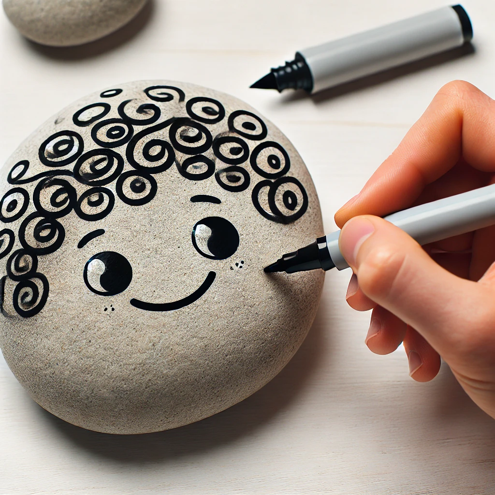
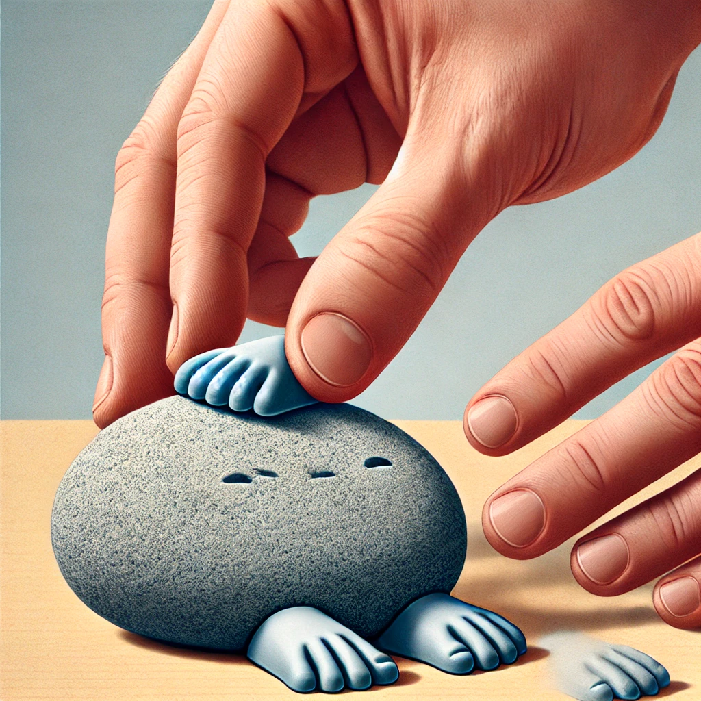

Remove the sticky backing from the googly eyes and place them on the rock.
Step 2

Pet Rock Mouth and other details
Adding hair and a mouth
Use a paint pen or acrylic marker to draw hair and a mouth.
Step 3

Pet Rock Feet
Adding Feet
Remove the sticky backing from the rubber feet and place them on the rock. This will give your pet rock a little more stability and prevent scratching.